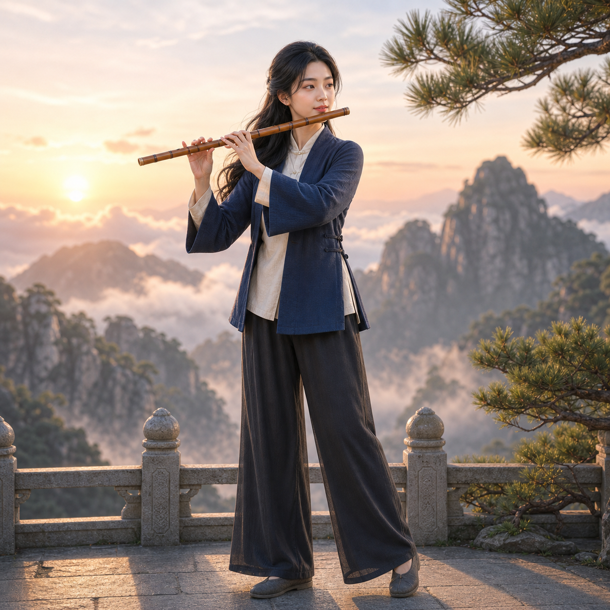
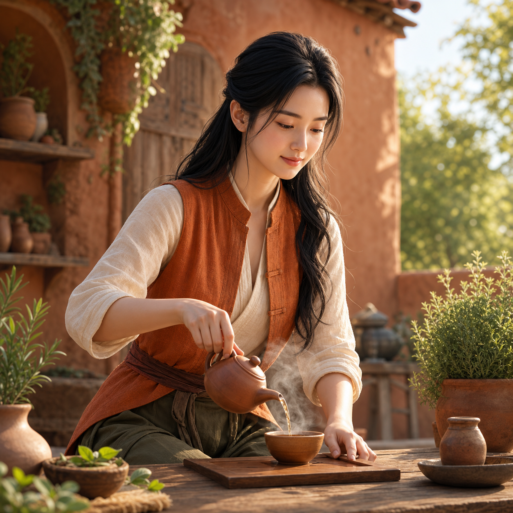
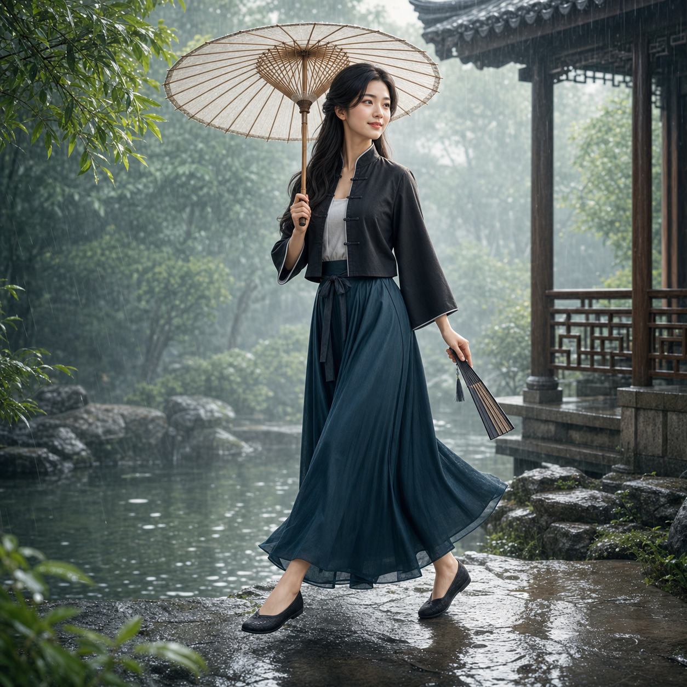
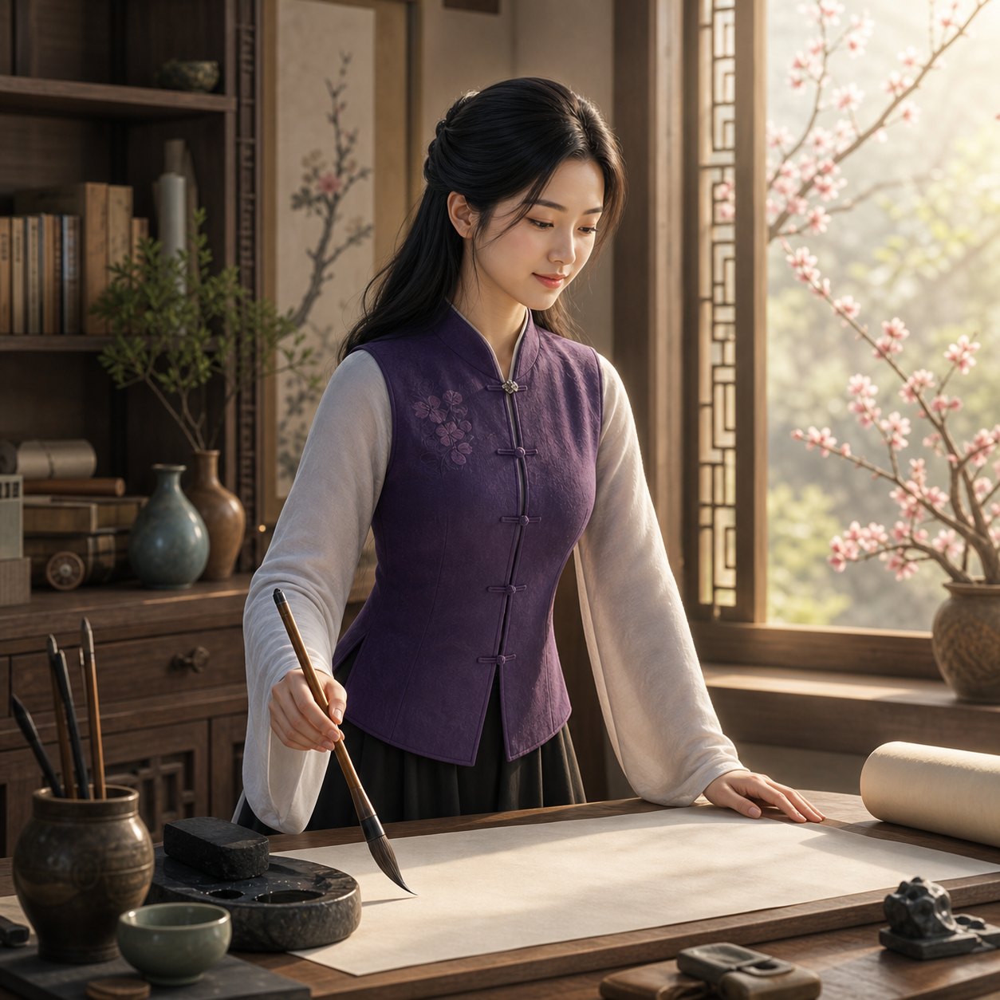
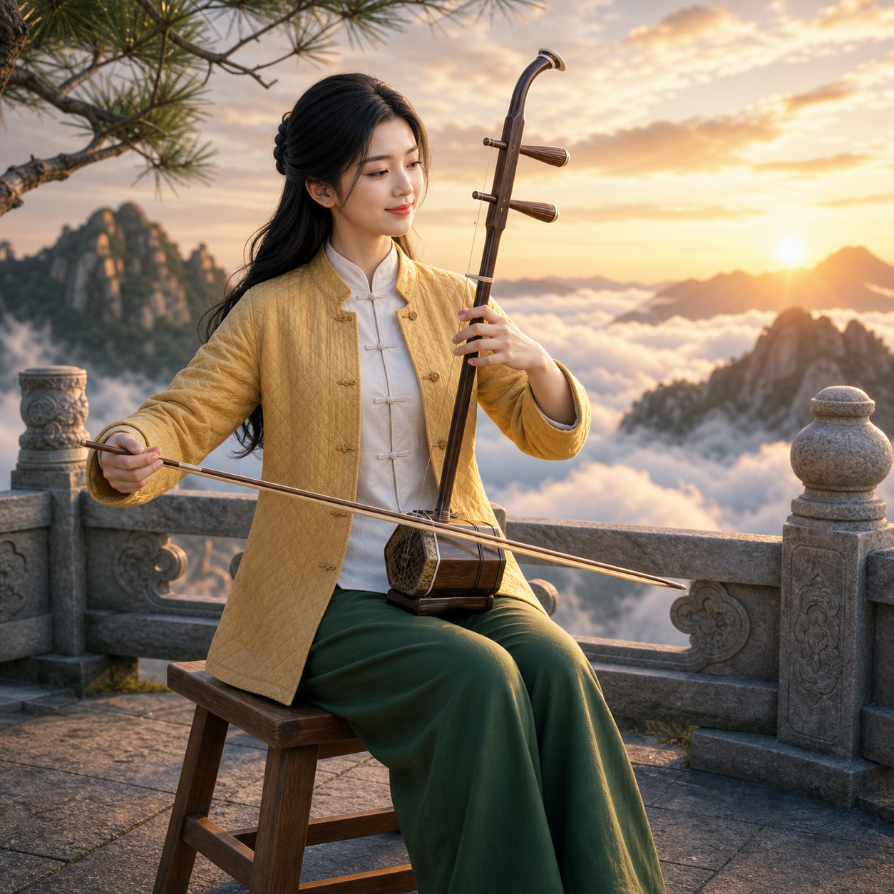
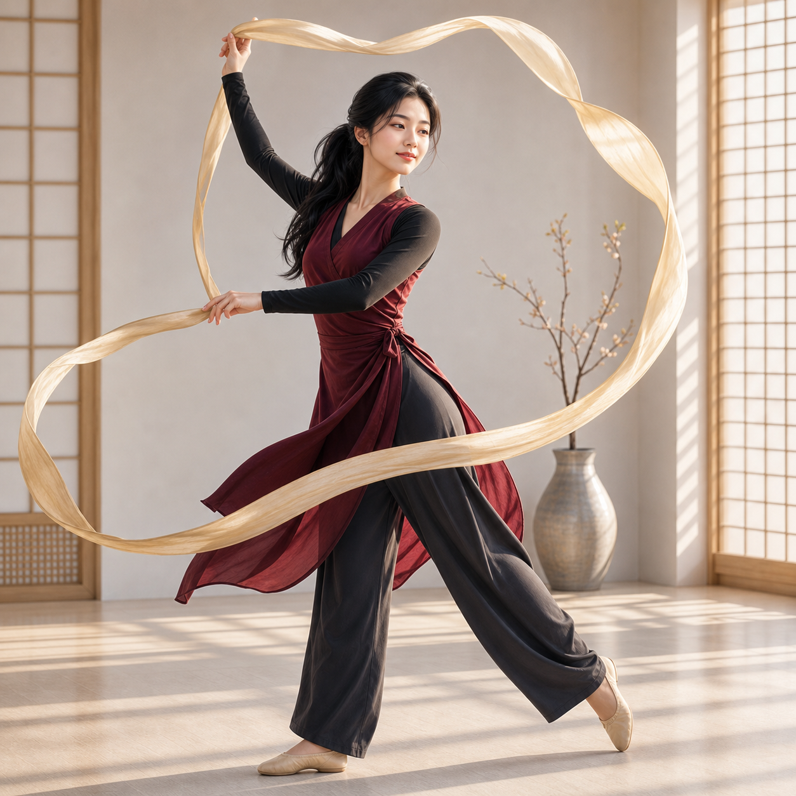

FreshMe v0.4 Cover Pool
Same recurring person, stronger variation across outfit, scene, instrument, and action.






Same recurring person, stronger variation across outfit, scene, instrument, and action.





